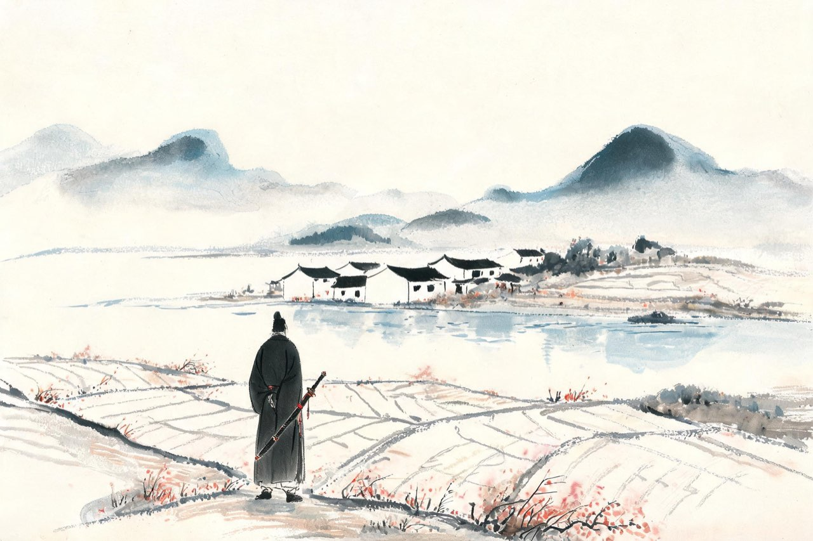
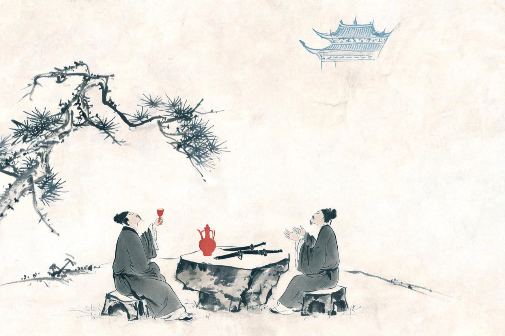

辛弃疾 · 1181-1192
带湖
稼轩的田园与悲愤

稼轩
淳熙八年冬，弹章落下来了。台臣王蔺劾你：用钱如泥沙，杀人如草芥。罢去一切职务。
从江阴签判算起，你宦游南宋将近二十年，做过州官、当过帅臣，练过兵、平过乱、上过书——恢复的事，你准备了一辈子，朝廷始终没有用你向北。如今四十二岁，你等来的第一件大事，是削职为民。
好在你早有安排。几年前你就预感仕途险恶，在上饶城外带湖畔买地筑室，此时新居恰好落成。你带着家眷住进去，给居所取名稼轩，自号稼轩居士。稼是种植谷物，轩是长廊小室——人生在勤，当以力田为先，你把这两个字挂在了门楣上。
名字是田家的名字，剑还挂在书房的壁上。此后十年，你在这片湖山里种地、读书、会客、填词——一柄闲着的剑，和它闲着的主人。
注
- 「用钱如泥沙，杀人如草芥」——淳熙八年（1181）冬王蔺弹章语，《宋史》本传载
- 带湖新居落成于淳熙九年（1182），先购地于任上：「稼轩」命名见《宋史》本传所载「故以『稼』名轩」，命名缘起参洪迈《稼轩记》——信史级
- 罢官后十余年闲居（1182-1192）：从邓谱
带湖的日子安静。吴音柔软，溪水绕村，你看着一户人家的三个儿子各忙各的，最小的那个躺卧溪头剥莲蓬——你把这一家五口写进小令，闲适得不像出自一个带兵的人——
清平乐·村居
茅檐低小，溪上青青草。
醉里吴音相媚好，白发谁家翁媪？
大儿锄豆溪东，中儿正织鸡笼。
最喜小儿亡赖，溪头卧剥莲蓬。
注
- 系年：带湖闲居期泛系年，无从确考——场景年1185为代表年，非考订
- 「亡赖」通「无赖」，此处作可爱解，非贬义
- 「吴音」：上饶地近吴语区；辛弃疾北人，听吴音为客居耳中之声
上饶西边有黄沙岭，道中有你常走的夜路。某年夏夜，你从岭上归来——明月、惊鹊、稻花香、蛙声，还有转过溪桥忽然出现的旧时茅店。国泰民安该有的样子，你在一夜之间全部遇上了——
西江月·夜行黄沙道中
明月别枝惊鹊，清风半夜鸣蝉。
稻花香里说丰年，听取蛙声一片。
七八个星天外，两三点雨山前。
旧时茅店社林边，路转溪桥忽见。
注
- 系年：带湖期泛系年——场景年1188为代表年，非考订
- 「路转溪桥」一作「路转溪头」，异文待校（本篇从通行「溪桥」）
- 黄沙岭：在上饶县西四十里黄沙坂，见地方志，待校
广丰有博山，山中有庵，你常独游夜宿。壁上题词，成了你排遣的一种方式。这一首，你把自己的一生劈成两半——少年的愁，是不知道愁；如今的愁，是说不出口——
丑奴儿·书博山道中壁
少年不识愁滋味，爱上层楼。
爱上层楼，为赋新词强说愁。
而今识尽愁滋味，欲说还休。
欲说还休，却道天凉好个秋。
注
- 系年：带湖期泛系年——场景年1188为代表年，非考订
- 博山：在今江西广丰，山有博山庵，辛弃疾常宿庵中题壁——从地志，待校
- 「强说愁」之「强」读qiǎng，勉强义

鹅湖之会
淳熙十五年冬，陈亮来了。
陈亮，字同甫，婺州人，永康学派的魁首，与你神交已久——同是主战的孤臣孽子，同是一肚子不合时宜。他从东阳冒着风雪来访，你到紫溪迎接，两人同游鹅湖寺，共饮瓢泉。
十日之间，长歌相答，极论世事。论的是什么？金人的虚实，恢复的方略，还有天底下最痛的那个问题：事有可为，人为何不用。说到激越处，两个失路的人拍案痛饮。
陈亮别后，你怅然若失，第二天驾车想追他回来，追到鹭鸶林，雪深泥滑，不得前，只得怅然而返。此后两人千里唱和，一阕《贺新郎》递过去，一阕和词递回来，往复再三。
你不是没有朋友，你是终于遇到一个能说真话的人。这段唱和里的词句，此后千年都是硬的。
注
- 「长歌相答，极论世事」——《贺新郎·同父见和再用韵答之》词序原文，信史级
- 追至鹭鸶林雪深而返：出同调词序（「至鹭鸶林，则雪深泥滑，不得前矣」），信史级
- 十日之间：词序有「留十日」语，从邓谱
- 永康学派魁首：陈亮事功之学代表人物，后状元及第（绍熙四年）——此处的学术定位从通行学术史
与陈亮相识之后，你那些压了几十年的梦有了出口。某夜酒酣，你挑亮灯芯，把壁上的剑取下来看——剑还是那柄剑，梦还是那个梦。你为陈同甫写下这首壮词，九句向前，最后一句拽回——
破阵子·为陈同甫赋壮词以寄之
醉里挑灯看剑，梦回吹角连营。
八百里分麾下炙，五十弦翻塞外声。
沙场秋点兵。
马作的卢飞快，弓如霹雳弦惊。
了却君王天下事，赢得生前身后名。
可怜白发生！
注
- 系年：邓笺编于淳熙十五年（1188）陈亮唱和前后；一说非一时一地之作——本篇从邓笺，待校
- 八百里：晋王恺牛名「八百里驳」，后以「八百里」指牛——「八百里分麾下炙」即烤牛肉分部下，典出《世说新语》
- 五十弦：本指瑟，李商隐「锦瑟无端五十弦」——此处泛指军乐，笺解从通行本
- 的卢：刘备骑的卢马跃檀溪典，喻良马
唱和往复，你用同一词韵再答陈亮。上片叹老大那堪说，下片把话说到了底——神州几番离合，骏骨无人顾，而你与同父：男儿到死——
贺新郎·同父见和再用韵答之（节选）
〔词为长调，此处节录下片末三韵；上片「老大那堪说。似而今、元龙臭味，孟公瓜葛……」与下片前段「事无两样人心别。问渠侬：神州毕竟，几番离合？汗血盐车无人顾，千里空收骏骨」从略，全文俟按邓笺补录。〕
正目断关河路绝。
我最怜君中宵舞，道男儿、到死心如铁。
看试手，补天裂。
注
- 「我最怜君中宵舞」：用祖逖闻鸡起舞典，赞陈亮——中宵起舞，志在恢复
- 补天裂：女娲炼石补天典，喻恢复中原
- 汗血盐车、千里骏骨：骥服盐车典（《战国策》）与燕昭王千金市骨典——俊才困于下位、朝廷徒然求马之名，笺解从通行本
- 系年淳熙十六年（1189）从邓笺